Club identity · Logo redesign
Motijheel Model Science & Research Club
A complete visual identity for my club, commissioned by its 7th president.
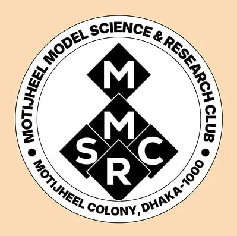
About the project
An identity for
my own club.
The 7th president of Motijheel Model Science & Research Club entrusted me with creating a complete identity for the club. As a member of the club myself, this project held a personal meaning.
I carefully worked with the available resources to develop a cohesive identity, bringing the logo, colours and typography together into a consistent visual system for my club.
The redesign builds the mark from interlocking diamond forms, with the club’s initials arranged into a single structure. A circular seal carries the full name and location, giving the identity a formal version alongside the standalone symbol.
The presentation explores the construction of the emblem, a red, blue, green and yellow palette, and the relationship between Nexa Heavy lettering and curved supporting type. Colour and monochrome variations show how the mark can work at different levels of detail.
- Interlocking diamond monogram
- Standalone symbol and circular seal
- Colour palette and type exploration
Process & applications
The full presentation.
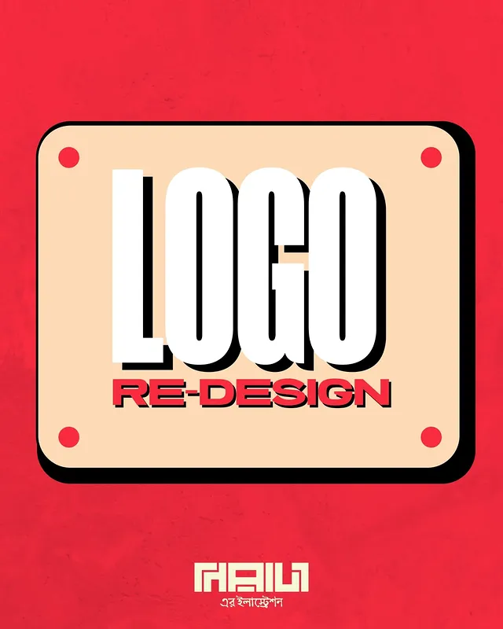
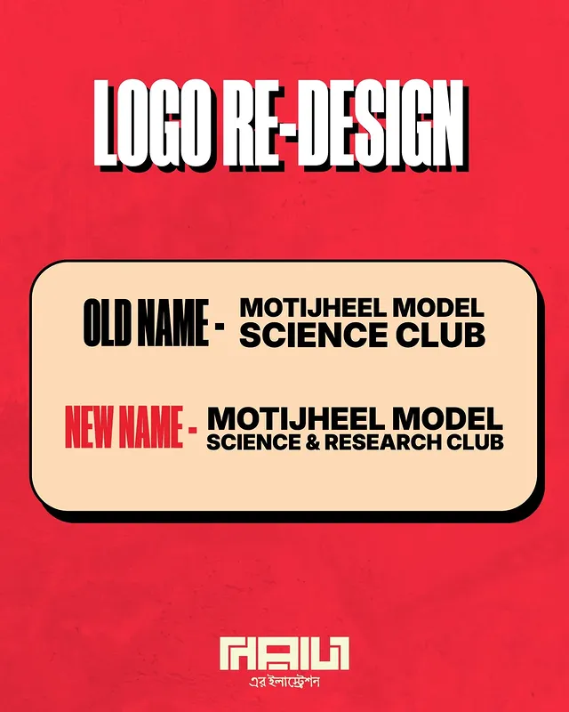
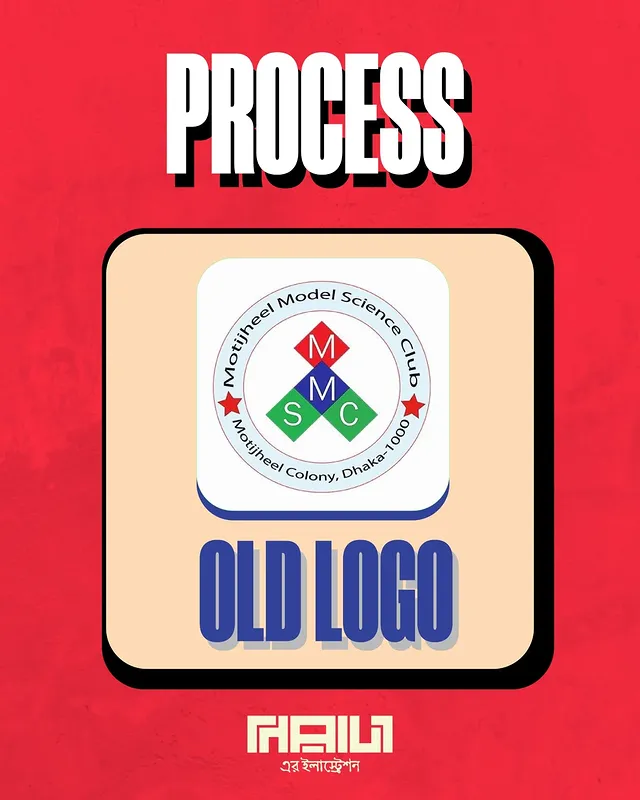
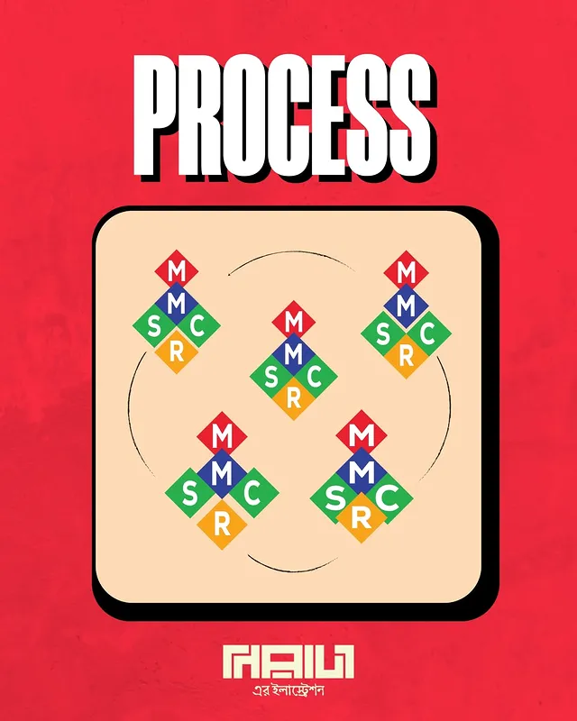
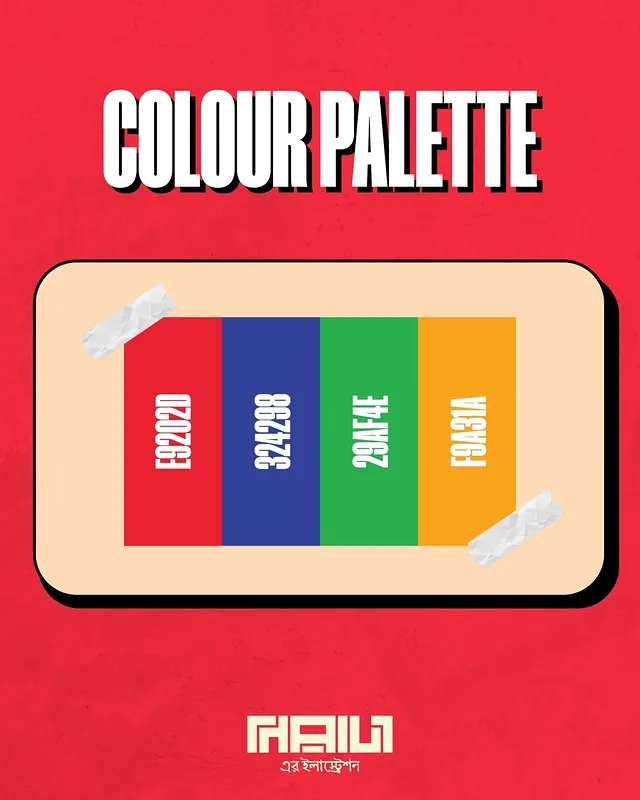
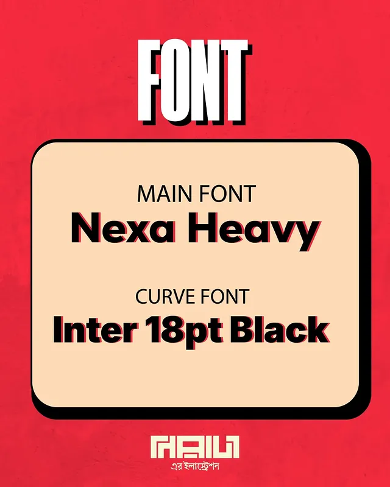
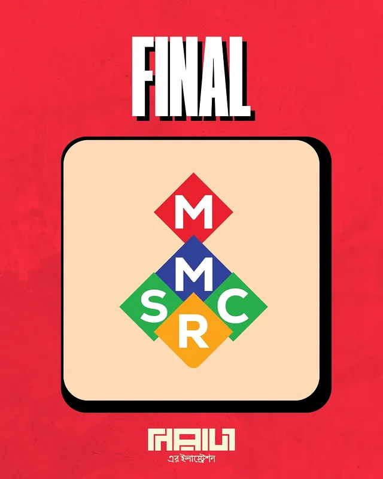
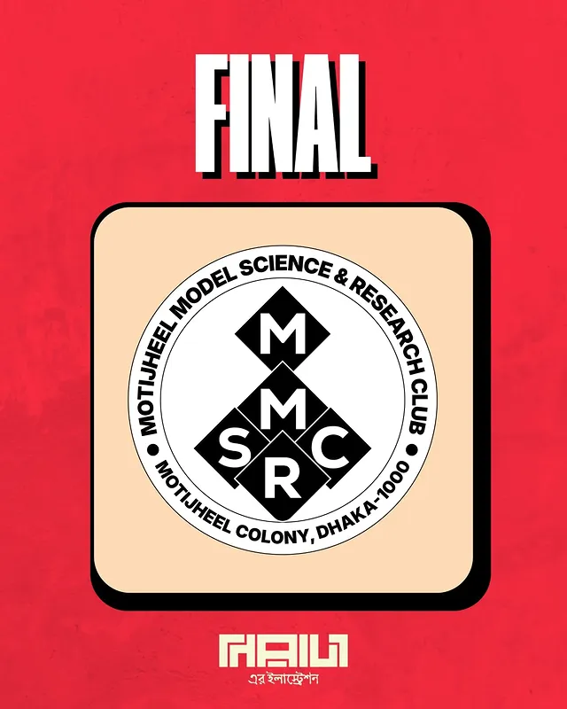
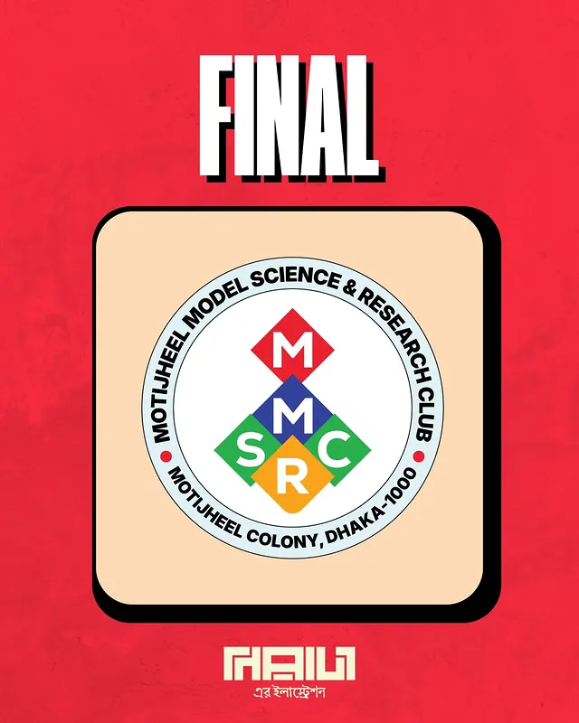
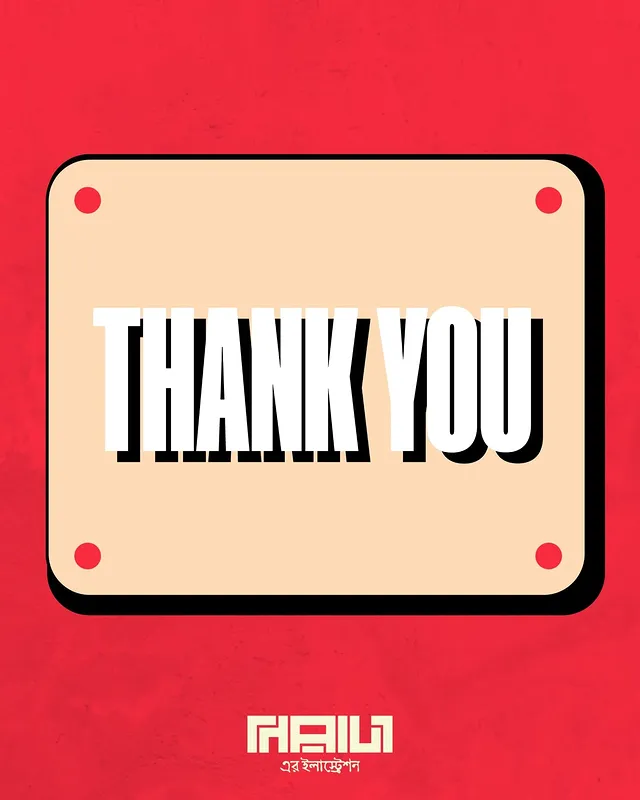